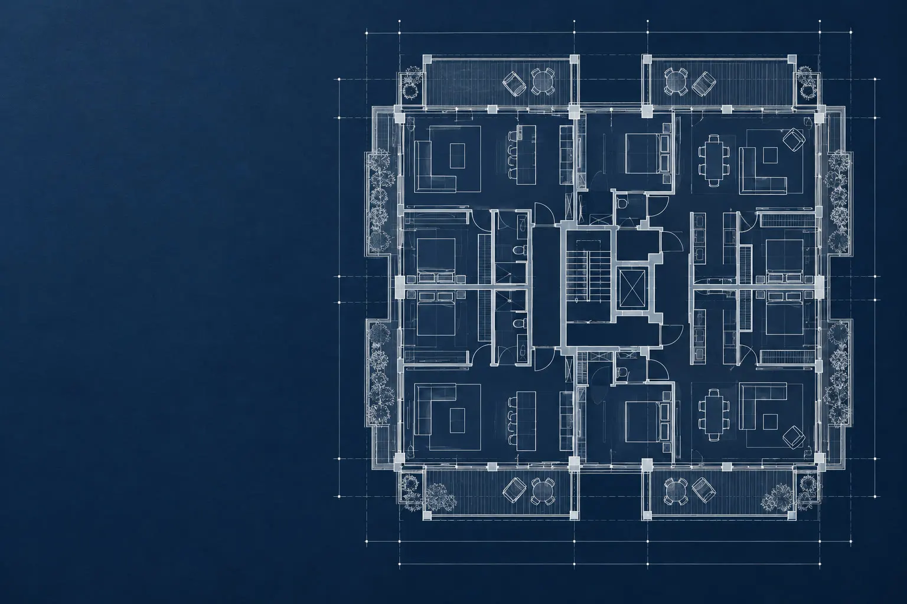
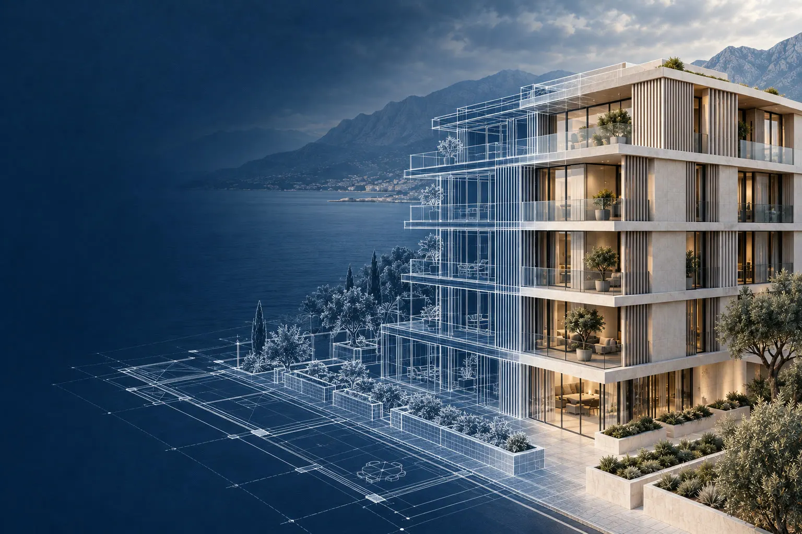
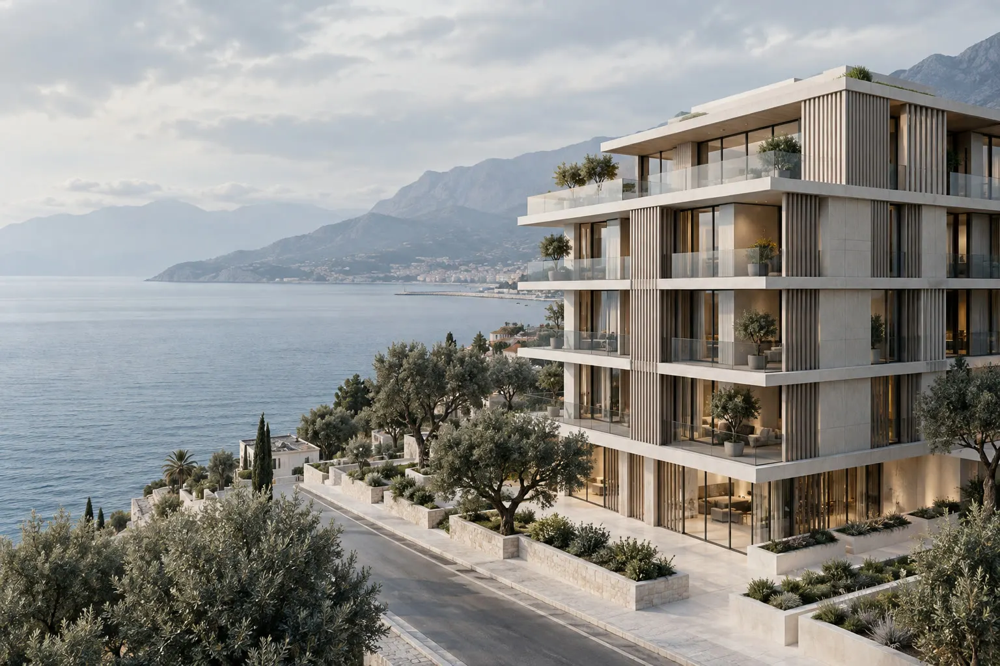
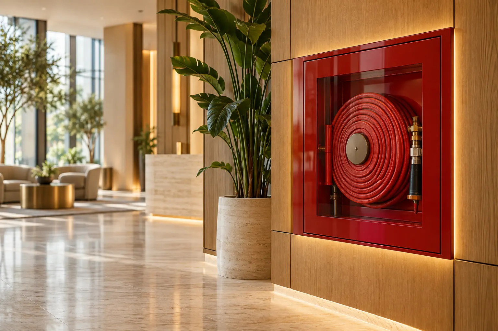
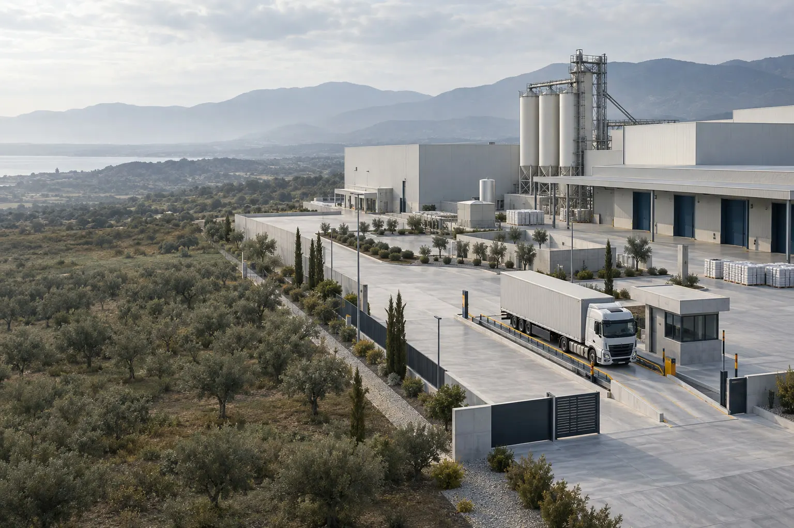
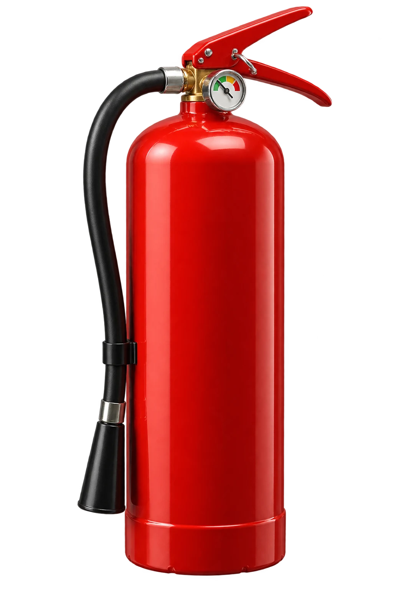

Kaptan · 2019'dan beri
Her bina bir çizgiyle başlar.
01 · İnşaat
Çizgi, binaya dönüşür.
01 · İnşaat
İçindeki güvenliği biz kurarız.
İnşaat, yangın güvenliği, kantar ve terazi. İstanbul ve Antalya'da kurumlara tek elden hizmet.
Teklif alBiz kimiz
İlk çizgiden son tüpe,
tek elden.
Otellerden hastanelere, belediye binalarından fabrikalara; projeyi çizer, yangın güvenliğini kurar, kantarı ve teraziyi ayarlarız. Kurulum da bakım da bizde.
Hakkımızda ↗Projeden anahtar teslime
Mimari proje, statik ve uygulama; binayı içindeki güvenlik sistemleriyle birlikte düşünürüz.

Algılamadan söndürmeye
Buton, dedektör, sprinkler, pano, dolap, kapı ve tüp: projelendirme, montaj, dolum ve bakım.

Kurulumdan kalibrasyona
Kamyon, hal ve platform kantarından hassas teraziye: satış, kurulum ve periyodik kalibrasyon.
Referanslar
Bize güvenen kurumlar

02 · Hizmet verdiğimiz kurumlar
Neden Kaptan
Kurduğumuz her sistemin
arkasındayız.
Kurulumla bitmez: bakım, dolum, kontrol ve kalibrasyonla sistemin ömrü boyunca yanınızdayız.
Bayilikler
Bayisi olduğumuz markalar
Mağaza
Ürünlerimize ulaşın
Söndürücüden teraziye 69 ürün. Çeşidini seç, boyunu seç, fiyatını WhatsApp'tan tek dokunuşla sor.
Öne çıkanlar
Hepsini gör →İletişim
Bir telefon
uzağınızdayız.
Keşif, teklif ya da bakım için yazın; en kısa sürede dönelim.